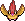

高速移動Agility
- 屬性
- 超能力
- 分類
- 變化
- 威力
- -
- 命中
- 必中
- SP
- 20
- 冷卻
- 1.4 秒（強化組）
- 範圍
- 自身／隊友
- 距離
- 0 格
- 段數
- 1
- 前搖
- 0.35 秒
- 接觸
- 否
即時戰鬥效果
提高使用者的速度（+2）。
作用於使用者（或同伴）。
升級時學會
大針蜂 Lv 40 波波 Lv 39
波波 Lv 39 大比鳥 Lv 48
大比鳥 Lv 48 烈雀 Lv 43
烈雀 Lv 43 大嘴雀 Lv 47
大嘴雀 Lv 47 皮卡丘 Lv 33
皮卡丘 Lv 33 卡蒂狗 Lv 43
卡蒂狗 Lv 43 小火馬 Lv 38烈焰馬 Lv 38
小火馬 Lv 38烈焰馬 Lv 38 大蔥鴨 Lv 36
大蔥鴨 Lv 36 嘟嘟 Lv 45
嘟嘟 Lv 45 嘟嘟利 Lv 60
嘟嘟利 Lv 60 快拳郎 Lv 7
快拳郎 Lv 7 墨海馬 Lv 36
墨海馬 Lv 36 海刺龍 Lv 40
海刺龍 Lv 40 角金魚 Lv 52
角金魚 Lv 52 金魚王 Lv 61
金魚王 Lv 61 飛天螳螂 Lv 21
飛天螳螂 Lv 21 雷伊布 Lv 47多邊獸 Lv 9化石翼龍 Lv 8
雷伊布 Lv 47多邊獸 Lv 9化石翼龍 Lv 8 急凍鳥 Lv 25
急凍鳥 Lv 25 閃電鳥 Lv 25
閃電鳥 Lv 25 火焰鳥 Lv 25
火焰鳥 Lv 25 迷你龍 Lv 36
迷你龍 Lv 36 哈克龍 Lv 38
哈克龍 Lv 38 快龍 Lv 38
快龍 Lv 38 芭瓢蟲 Lv 43
芭瓢蟲 Lv 43 安瓢蟲 Lv 51
安瓢蟲 Lv 51 圓絲蛛 Lv 45
圓絲蛛 Lv 45 阿利多斯 Lv 53
阿利多斯 Lv 53 長尾怪手 Lv 50
長尾怪手 Lv 50 麒麟奇 Lv 31
麒麟奇 Lv 31 巨鉗螳螂 Lv 21
巨鉗螳螂 Lv 21 狃拉 Lv 36
狃拉 Lv 36 巨翅飛魚 Lv 29
巨翅飛魚 Lv 29 盔甲鳥 Lv 16
盔甲鳥 Lv 16 刺龍王 Lv 40
刺龍王 Lv 40 多邊獸Ⅱ Lv 9戰舞郎 Lv 37
多邊獸Ⅱ Lv 9戰舞郎 Lv 37 木守宮 Lv 31
木守宮 Lv 31 森林蜥蜴 Lv 35
森林蜥蜴 Lv 35 蜥蜴王 Lv 35
蜥蜴王 Lv 35 傲骨燕 Lv 43
傲骨燕 Lv 43 大王燕 Lv 49
大王燕 Lv 49 長翅鷗 Lv 55
長翅鷗 Lv 55 溜溜糖球 Lv 31
溜溜糖球 Lv 31 鐵面忍者 Lv 38
鐵面忍者 Lv 38 正電拍拍 Lv 47
正電拍拍 Lv 47 負電拍拍 Lv 47
負電拍拍 Lv 47 利牙魚 Lv 43
利牙魚 Lv 43 巨牙鯊 Lv 53
巨牙鯊 Lv 53 櫻花魚 Lv 15
櫻花魚 Lv 15 愛心魚 Lv 16
愛心魚 Lv 16 金屬怪 Lv 56
金屬怪 Lv 56 巨金怪 Lv 66
巨金怪 Lv 66 姆克兒 Lv 33
姆克兒 Lv 33 姆克鳥 Lv 38
姆克鳥 Lv 38 姆克鷹 Lv 41
姆克鷹 Lv 41 泳圈鼬 Lv 28
泳圈鼬 Lv 28 浮潛鼬 Lv 29
浮潛鼬 Lv 29 雙尾怪手 Lv 29
雙尾怪手 Lv 29 捲捲耳 Lv 33
捲捲耳 Lv 33 長耳兔 Lv 33
長耳兔 Lv 33 小球飛魚 Lv 19
小球飛魚 Lv 19 多邊獸Ｚ Lv 12
多邊獸Ｚ Lv 12
波波 Lv 39
比比鳥 Lv 43大比鳥 Lv 48烈雀 Lv 43大嘴雀 Lv 47皮卡丘 Lv 33卡蒂狗 Lv 43小火馬 Lv 38烈焰馬 Lv 38大蔥鴨 Lv 36嘟嘟 Lv 45嘟嘟利 Lv 60快拳郎 Lv 7墨海馬 Lv 36海刺龍 Lv 40角金魚 Lv 52金魚王 Lv 61飛天螳螂 Lv 21雷伊布 Lv 47多邊獸 Lv 9化石翼龍 Lv 8急凍鳥 Lv 25閃電鳥 Lv 25火焰鳥 Lv 25迷你龍 Lv 36哈克龍 Lv 38快龍 Lv 38芭瓢蟲 Lv 43安瓢蟲 Lv 51圓絲蛛 Lv 45阿利多斯 Lv 53長尾怪手 Lv 50麒麟奇 Lv 31巨鉗螳螂 Lv 21狃拉 Lv 36巨翅飛魚 Lv 29盔甲鳥 Lv 16刺龍王 Lv 40多邊獸Ⅱ Lv 9戰舞郎 Lv 37木守宮 Lv 31森林蜥蜴 Lv 35蜥蜴王 Lv 35傲骨燕 Lv 43大王燕 Lv 49長翅鷗 Lv 55溜溜糖球 Lv 31鐵面忍者 Lv 38正電拍拍 Lv 47負電拍拍 Lv 47利牙魚 Lv 43巨牙鯊 Lv 53櫻花魚 Lv 15愛心魚 Lv 16金屬怪 Lv 56巨金怪 Lv 66姆克兒 Lv 33姆克鳥 Lv 38姆克鷹 Lv 41泳圈鼬 Lv 28浮潛鼬 Lv 29雙尾怪手 Lv 29捲捲耳 Lv 33長耳兔 Lv 33小球飛魚 Lv 19多邊獸Ｚ Lv 12招式光碟
 精神強念屬性招式光碟 ・少見（每打倒一隻該屬性寶可夢 1%，由 27 個招式分配）
精神強念屬性招式光碟 ・少見（每打倒一隻該屬性寶可夢 1%，由 27 個招式分配）
可以教會 109 隻寶可夢：
大針蜂波波比比鳥大比鳥烈雀大嘴雀皮卡丘卡蒂狗 凱西
凱西 勇基拉
勇基拉 胡地小火馬烈焰馬
胡地小火馬烈焰馬 呆呆獸
呆呆獸 呆殼獸大蔥鴨嘟嘟嘟嘟利
呆殼獸大蔥鴨嘟嘟嘟嘟利 催眠貘
催眠貘 引夢貘人
引夢貘人 蛋蛋
蛋蛋 椰蛋樹快拳郎墨海馬海刺龍角金魚金魚王
椰蛋樹快拳郎墨海馬海刺龍角金魚金魚王 寶石海星
寶石海星 魔牆人偶飛天螳螂
魔牆人偶飛天螳螂 迷唇姐雷伊布多邊獸化石翼龍急凍鳥閃電鳥火焰鳥迷你龍哈克龍快龍
迷唇姐雷伊布多邊獸化石翼龍急凍鳥閃電鳥火焰鳥迷你龍哈克龍快龍 超夢
超夢 夢幻芭瓢蟲安瓢蟲圓絲蛛阿利多斯
夢幻芭瓢蟲安瓢蟲圓絲蛛阿利多斯 天然雀
天然雀 天然鳥長尾怪手
天然鳥長尾怪手 太陽伊布
太陽伊布 呆呆王
呆呆王 未知圖騰
未知圖騰 果然翁麒麟奇巨鉗螳螂狃拉巨翅飛魚盔甲鳥刺龍王多邊獸Ⅱ戰舞郎
果然翁麒麟奇巨鉗螳螂狃拉巨翅飛魚盔甲鳥刺龍王多邊獸Ⅱ戰舞郎 迷唇娃
迷唇娃 洛奇亞
洛奇亞 時拉比木守宮森林蜥蜴蜥蜴王傲骨燕大王燕長翅鷗
時拉比木守宮森林蜥蜴蜥蜴王傲骨燕大王燕長翅鷗 拉魯拉絲
拉魯拉絲 奇魯莉安
奇魯莉安 沙奈朵溜溜糖球鐵面忍者
沙奈朵溜溜糖球鐵面忍者 瑪沙那
瑪沙那 恰雷姆正電拍拍負電拍拍利牙魚巨牙鯊跳跳豬
恰雷姆正電拍拍負電拍拍利牙魚巨牙鯊跳跳豬 噗噗豬
噗噗豬 月石太陽岩
月石太陽岩 天秤偶
天秤偶 念力土偶
念力土偶 風鈴鈴
風鈴鈴 小果然櫻花魚愛心魚
小果然櫻花魚愛心魚 鐵啞鈴金屬怪巨金怪姆克兒姆克鳥姆克鷹泳圈鼬浮潛鼬雙尾怪手捲捲耳長耳兔
鐵啞鈴金屬怪巨金怪姆克兒姆克鳥姆克鷹泳圈鼬浮潛鼬雙尾怪手捲捲耳長耳兔 鈴鐺響
鈴鐺響 銅鏡怪
銅鏡怪 青銅鐘
青銅鐘 魔尼尼小球飛魚多邊獸Ｚ
魔尼尼小球飛魚多邊獸Ｚ 艾路雷朵
艾路雷朵
波波比比鳥大比鳥烈雀大嘴雀皮卡丘卡蒂狗凱西勇基拉胡地小火馬烈焰馬呆呆獸呆殼獸大蔥鴨嘟嘟嘟嘟利催眠貘引夢貘人蛋蛋椰蛋樹快拳郎墨海馬海刺龍角金魚金魚王寶石海星魔牆人偶飛天螳螂迷唇姐雷伊布多邊獸化石翼龍急凍鳥閃電鳥火焰鳥迷你龍哈克龍快龍超夢夢幻芭瓢蟲安瓢蟲圓絲蛛阿利多斯天然雀天然鳥長尾怪手太陽伊布呆呆王未知圖騰果然翁麒麟奇巨鉗螳螂狃拉巨翅飛魚盔甲鳥刺龍王多邊獸Ⅱ戰舞郎迷唇娃洛奇亞時拉比木守宮森林蜥蜴蜥蜴王傲骨燕大王燕長翅鷗拉魯拉絲奇魯莉安沙奈朵溜溜糖球鐵面忍者瑪沙那恰雷姆正電拍拍負電拍拍利牙魚巨牙鯊跳跳豬噗噗豬月石太陽岩天秤偶念力土偶風鈴鈴小果然櫻花魚愛心魚鐵啞鈴金屬怪巨金怪姆克兒姆克鳥姆克鷹泳圈鼬浮潛鼬雙尾怪手捲捲耳長耳兔鈴鐺響銅鏡怪青銅鐘魔尼尼小球飛魚多邊獸Ｚ艾路雷朵